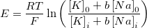
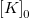
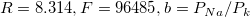

as y.
as y.Contents |

Where  as x, as y.
.
Goldman-Hodgkin-Katz equation in electrophysiology.
Number: 5
Namen: b, Nao, Nai, Ki, T
Meanings:
b = Relative permeabilities of Na to K,
Nao = Concentraion of Na ions outside,
Nai = Concentraion of Na ions inside,
Ki = Concentraion of K ions inside,
T = Temperature (in Kelvin).
Lower Bounds: Nao >= 0.0, Nai >= 0.0, Ki >= 0.0, T > 0.0.
Upper Bounds: none
| Hinweis: In most cases, only b is set as vary, while all other are should be specified and fixed. |
nlf_goldman(x, b, Nao, Nai, Ki, T )
FITFUNC\GOLDMAN.FDF
Electrophysiology